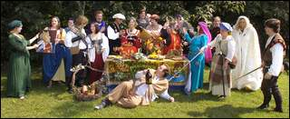

|
Renaissance meal features Viking theme this year By
Cathy Wood Myers, Staff Writer

Members of the volunteer Renaissance Roundtable get ready for the Renaissance Feast Saturday, Oct. 21, at the Florence-Lauderdale Coliseum. Open to-anyone who buys a ticket, the feast features Renaissance costumes and décor and an authentic Viking-style menu. JIM HANNON/TimesDaily FLORENCE -- Queen Freya, Lady of Clan Greywolf, is inviting 200 of her closest friends to a royal feast -- and that includes you. As the monarch reigning over this year's Renaissance activities in the Shoals, Queen Freya -- actually Ann Iaria, of Florence -- will preside over the annual feast. Open to anyone who buys a ticket, the feast features medieval characters (in reality, members of the volunteer Renaissance Roundtable) in full costume as well as entertainment, music and a multi-course dinner. The coliseum will be decorated to resemble a Viking hall. It's a highlight of October as Renaissance Month, which culminates in the Alabama Renaissance Faire, Friday--Saturday, Oct. 28-29, at Wilson Park. Iaria earned the right to rule when she found the coveted hidden coin baked into a cake at the 2005 feast. Each year at the feast, the finder of the coin is declared the new ruler and crowned at the faire the next weekend. Anyone who wants to try to find the coin has a chance of becoming the ruler. Because of her Viking heritage and interest in Viking history, Iaria called herself the "Viking Queen." The feast will continue that theme, thanks to Renaissance chef Jim Matterer, of Newark, Del., who's catered the dinner since 2001. Frisian food
Matterer, whose catering business is called Gode Cookery, prepares Renaissance feasts throughout the eastern half of the country using original historical recipes. The resulting meals are as close to authentic as he can get. But because he couldn't find any original documentation for Viking cooking, he turned to 11th century Frisian food to recreate the experience Iaria wanted. The Frisians, related to the Saxons and Angles, lived in what's now northern Germany. Their culture was similar to the Vikings'. Dishes for the feast include onion soup, marinated cabbage salad, roast chicken in wine broth, dilled carrots, roast beef in sauce, baked apples and pears and an almond tart, along with bread and butter and "Alabama Ale" and "Ren Wine" -- or sweet tea and lemon water. Several of the dishes are vegetarian and vegan, as well. In addition, Matterer hand-carved a mold of a Viking ship to make Viking-theme cookies for the feast. His cookies every year are so creative that many attending the feast save them as-souvenirs. Matterer discovered Renaissance cooking when he volunteered 25 years ago to cook for a meeting of the medieval-re-enactment group Society of Creative Anachronism. His hobby became a passion as more and more original documents on medieval food became available for research. He taught himself how to read and speak medieval English so he could decipher them. "I choose recipes that I know will be familiar the way they are," he said. "We don't serve restuffed calf brains or flaming peacock heads. "I look at the recipes carefully and choose ones that aren't so unusual that people won't understand or appreciate them. I want people to have a good time and walk away satisfied." As authentic as possible
He tried the Florence feast menu out a couple of weeks ago for a dinner at the University of Delaware and got a good reaction, he said. "There's nothing weird or strange or unrecognizable," he said. "We're keeping as close to authentic as possible but still will be pleasing. We have to cook for our audience, which is what medieval cooks did, too." Helping with the feast is Matterer's taster, Darrell McCormick, also of Newark, Del., and Matterer's friend and assistant, Lisa Blair, of Mobile, who brings a crew of helpers. Lee Freeman, a longtime member of the Renaissance Roundtable, is the one who originally contacted Matterer several years ago, to cater the feast. He found the chef on the Internet. "Our faire is about education, art, creativity and fun. An authentic medieval feast served by pages and squires in traditional style with everyone in their garb and medieval music and entertainment lets people experience what medieval food and food etiquette at a feast was really like," Freeman said. "We could serve ordinary food, but part of the educational experience is to sample authentic medieval cuisine. Where else in northwest Alabama can you get quince in walnut pastries or chicken in verjuice?" Even if you're not sure you'll like the food, give it a try, Freeman said. "I'm a very particular eater, and I love the food," he added. "As Jim says on his Web site, medieval people knew what tasted good the same as we do." The names may look a bit strange to us in their medieval Italian, English or French, but the food tastes great." And those attending the feast may have a chance to meet the next Food Network star. Matterer has been featured on two segments of the network's "The Secret Life Of …" show. He'll also be in a third about Halloween that airs this month. The Food Network is on Comcast 60. Matterer is submitting a proposal to the Food Network for his own show. Cathy Wood Myers can be reached at 740-5733 or cathy.myers@timesdaily.com. WANT TO GO?
What: Renaissance Feast,-sponsored by the Renaissance Roundtable When: 7 p.m. Saturday, Oct. 21 Where: Florence-Lauderdale-Coliseum, 702 E. Veterans Drive, Florence Cost: Tickets $20 each, sold at Kennedy-Douglass Center for the Arts and Anderson's Bookland, Florence. Seating limited to 200. Also: Feast organizers encourage those attending to wear Renaissance costume and decorate their tables with Renaissance-style linens, plates, goblets, etc., although it isn't required. The coliseum will be open for decorating beginning at 8 a.m. the day of the feast. Details: alarenfaire.org and godecookery.com This page © 2007 Gode Cookery http://www.godecookery.com
|

BACK TO: Alabama Renaissance Faire
A Boke of Gode Cookery Alabama
Renaissance Faire
Alabama
Renaissance Faire
© James L. Matterer
Please visit The Gode Cookery Bookshop